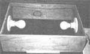

NOTE: This photo of Tilde Merkert's seed starter shows the topless and bottomless box upside down ... so you can see exactly how the light fixtures and wiring are installed. In use, the box is flipped over so that the ""tab"" you see along the bottom edge of the rectangle's nearest side (and matching tabs nailed to the other three sides of the box as well) are on top of the topless and bottomless base.